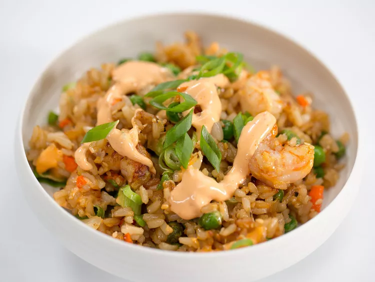

Air Fryed Shrinmp Fried Rice

Description
This fried rice is so deliciously savory, nobody will believe you made it with an air fryer. It's full of toasted, crunchy rice bits that add a great contrast to the chewy interior. The shrimp is tender and juicy, and the bites of peas burst in your mouth. Finish it up with Sriracha mayo and fresh green onion to compliment everything perfectly. If you don't have shrimp on hand, you can also use leftover chicken or steak.
Ingredients
- 1 tablespoon canola oil
- 1/3 cup chopped onion
- 1/3 cup chopped carrot
- 1 teaspoon kosher salt, divided
- 2 large eggs, lightly beaten
- 1 pound large, peeled, deveined raw shrimp
- 2 (8-ounce) packages pre-cooked microwavable brown rice
- 3/4 cup frozen green peas
- 1 tablespoon soy sauce
- 1 teaspoon rice vinegar
- 1/4 teaspoon freshly ground black pepper
- 1 tablespoon toasted sesame seeds, or as needed (optional)
- 1/4 cup Sriracha mayonnaise, or as needed
- 1 scallion, sliced, or as needed
Steps
- Remove the basket insert from air fryer. Preheat the air fryer to 400 degrees F (200 degrees C) for 5 minutes.
- Add oil to the basket holder to coat; add onion, carrot, and 1/2 teaspoon of the salt, and stir to combine. Cook for 5 minutes. Add eggs; cook until partially set, about 3 minutes.
- Add shrimp, rice, peas, soy sauce, vinegar, pepper, and remaining salt to egg mixture; stir to combine. Cook for 10 minutes. Stir mixture, sprinkle with sesame seeds, if desired, and cook until heated throughout and crisp, 10 to 15 minutes more. Drizzle with Sriracha mayonnaise, and sprinkle with scallions.